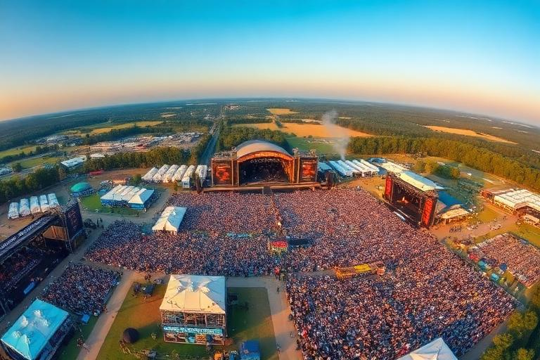
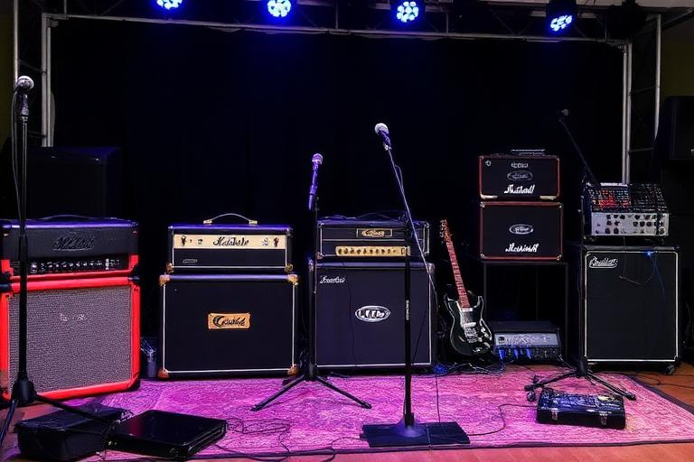

Advanced live events
Festivals
Festivals are multi-part events rather than oversized gigs. Owners shape the identity of an annual event, build stages and programming, invite or book artists, set the audience offer, manage sponsorship and operations, then live with the financial and reputational result.

In brief
For owners: start with a coherent event identity and a budget you can survive, then build the site, schedule and lineup around it. For bands: judge a festival opportunity by audience fit, timing, travel and the wider career value—not only the headline fee.
Founding and event identity
Festival setup establishes the event's long-term shape. Choices such as location, annual month, vibe, site type, duration and environmental approach are not merely decorative: they define what kind of event you are trying to run and what future editions should feel like.
Month & location
Determine when and where the annual edition belongs in the world, which affects travel, competing events and audience expectations.
Vibe
Gives the festival a musical and cultural identity. A coherent lineup can be stronger than a random collection of famous acts.
Site type
Shapes the feel and practical scale of the event.
Duration
More days create more programming opportunity but also more operational exposure.
Stages and schedule
Every stage creates capacity, but capacity is only useful if the programme can support it. Owners should think in terms of audience movement, clashes and a sensible hierarchy between emerging, mid-card and headline acts.

- Avoid impossible or overly tight artist schedules.
- Use stage scale to support the expected act and audience.
- Leave enough room for setup, changeover and the realities of multi-stage programming.
- Do not assume every strong band belongs in the same time slot.
Building the lineup
Owners may invite, book or manage artists according to the festival workflow. A useful lineup has shape: it should attract people while still feeling like one event.
| Consideration | Why it matters |
|---|---|
| Artist popularity | Can help demand, but expensive bookings increase break-even pressure. |
| Genre/vibe fit | Supports a recognisable festival identity and audience expectation. |
| Career tier | A healthy bill can mix new acts with proven draws. |
| Travel & availability | An invitation is only useful if the artist can actually attend. |
| Stage placement | Matching act scale to stage and slot helps the programme feel intentional. |
Tickets, add-ons and audience experience
Festival income is broader than one ticket price. Depending on the edition and available systems, tickets, premium options, camping, food/drink, merchandise and sponsorship can all contribute to the event economy.
Sponsorship and operations
Sponsorship is one funding route, not free money with no consequences. Owners should balance commercial support with the event's identity and audience. Operational readiness still matters when the gates open.
For bands playing a festival
- Check the date and city. Make sure the appearance is compatible with your tour and travel plan.
- Understand your slot. A support-stage appearance and a headline slot are different opportunities.
- Prepare the right set. Build for the audience and available time rather than treating every festival like a club headline show.
- Use the moment. Promotion, merchandise, networking and later releases can extend the value of a strong appearance.